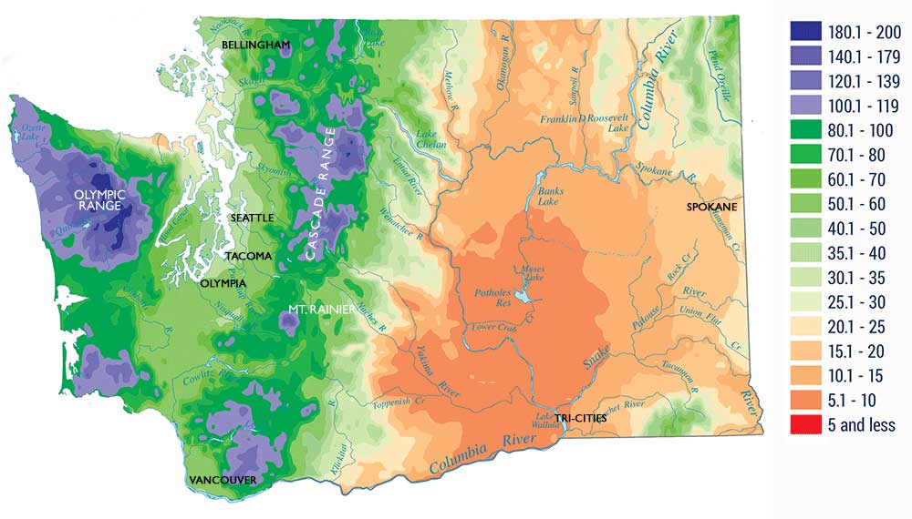
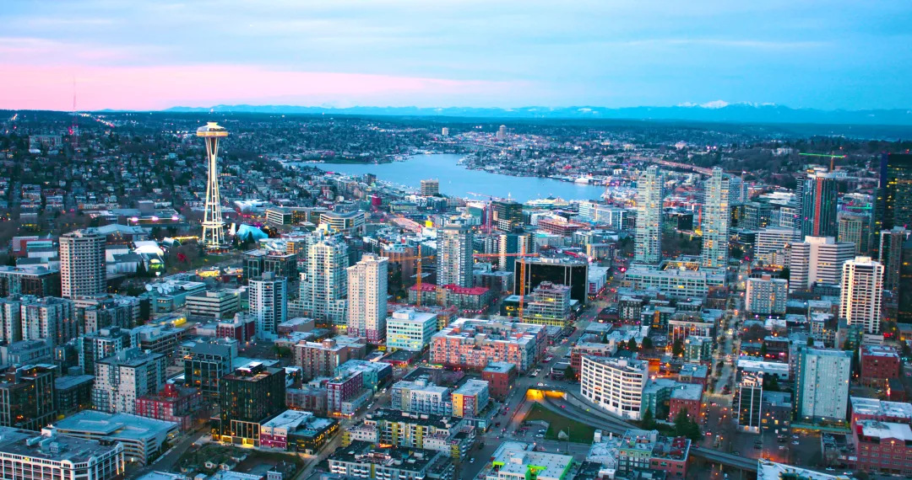
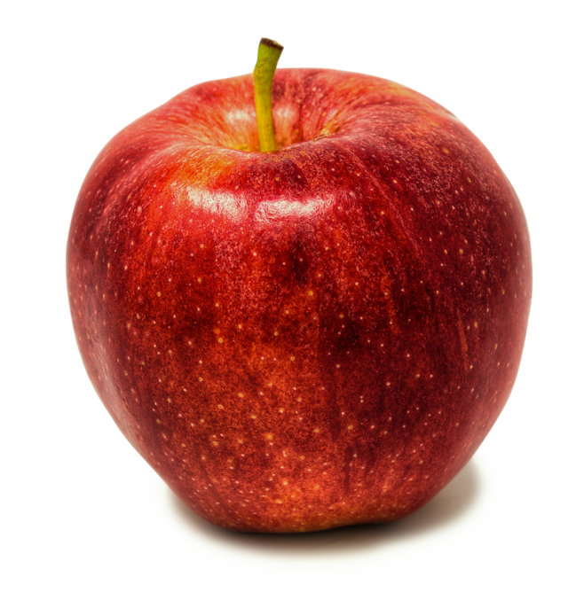

Climate
Washington has a varied climate greatly defined by its geographic features.
The Cascade Mountain range splits Washington into Western and Eastern regions which have developed unique cultures, though most of the population lies west.

Tech
Washington has the highest percentage of their workforce in tech, at 9.4%. This can be credited to the massive tech companies started in Washington, including Microsoft and Amazon.

Apples
Apples are the state fruit of Washington. More than 60% of fresh apples in the US are grown in Washington.
More Fuji apples are grown annually in Washington than Japan.
